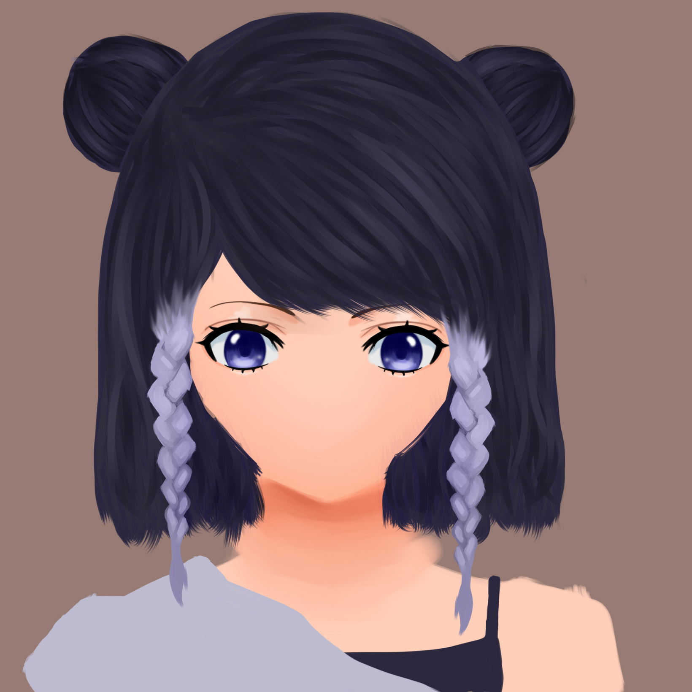

All of these artwork on display are completed and unfinished artwork that I have created over time.

Daily Clothes was created using coloring pencil on paper.

Falling Girl was created using acrylic paint on paper and is part of the Adventure art series.

Flower Fairy was created using acrylic paint on paper and is part of the Adventure art series.

Man vs Lava was created using colored ball point pens on paper.

Mountains was created using watercolor on paper.

My Hero Academia was created using acrylic paint on canvas using references from the anime show My Hero Academia.

My Room was created using color pencil on paper.

Self Portrait was created using SAI drawing program and drawing tablet.

Still Life was created using chalk pastel on black paper using references from a still life on display.

Surcose was created SAI drawing program and drawing tablet using references from the game Genshin Impact.
Kris was created SAI drawing program and drawing tablet.